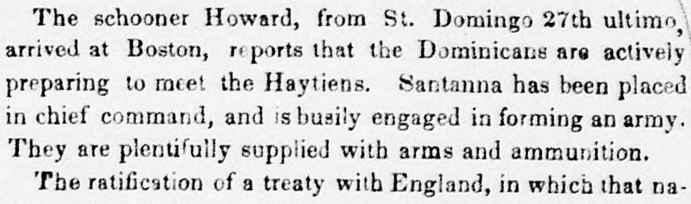

 See the full pageVer la página completa
See the full pageVer la página completa
Domingo, was celebrated by a public dinner, at which the PresidentDomingo, fue celebrado con una cena pública, en la que el Presidente
According to the Daily National Intelligencer, the Dominicans were actively preparing to meet the Haytiens with an army formed under the chief command of Santanna and plentiful supplies of arms and ammunition, alongside a fleet of ten vessels of war. The Republic of St. Domingo also celebrated the ratification of a treaty in which England acknowledged its independence from Hayti, during which the British Consul stated that England would not interfere in the coming contest and noted that British vessels would pay fifty cents less tonnage duty than American vessels. Additionally, the newspaper reported on disturbances in Arkansas involving the "Everett clan" in Marion and Searcy counties, resulting in the killing of Mr. Tutt and an attack on Major Hensley.Según el Daily National Intelligencer, los dominicanos se preparaban activamente para enfrentar a los haitianos con un ejército organizado bajo el mando supremo de Santana y abundantes pertrechos de boca y guerra, secundados por una escuadrilla de diez buques armados. La República de Santo Domingo solemnizó asimismo la ratificación de un tratado por el cual Inglaterra reconoció su independencia de Haití, ocasión en que el cónsul británico declaró que su país no se inmiscuiría en el conflicto venidero e indicó que las naves británicas abonarían cincuenta centavos menos en derechos de tonelaje que las estadounidenses. El diario recogía además alteraciones del orden en Arkansas protagonizadas por el «clan Everett» en los condados de Marion y Searcy, con saldo de la muerte del Sr. Tutt y un atentado contra el mayor Hensley.
FULL TEXT:TRADUCCIÓN:
The schooner Howard, from St. Domingo 27th ultimo, arrived at Boston, reports that the Dominicans are actively preparing to meet the Haytiens. Santanna has been placed in chief command, and is busily engaged in forming an army. They are plentifully supplied with arms and ammunition.La goleta Howard, procedente de Santo Domingo el 27 del pasado, llegó a Boston, informa que los dominicanos se están preparando activamente para enfrentar a los haitianos. Santana ha sido colocado en el mando en jefe, y está ocupadamente empeñado en formar un ejército. Están abundantemente provistos de armas y municiones.
The ratification of a treaty with England, in which that na-La ratificación de un tratado con Inglaterra, en el cual esa na-
Daily National Intelligencer. Washington City [D.C.], October 30, 1850.
See the original at the Library of CongressVer el original en la Biblioteca del Congreso
Published by: Gales & Seaton, 1813-Publicado por: Gales & Seaton, 1813-
Edition: Edition 1Edición: edición 1
Page: 3Página: 3
Frequency: daily (1813–1869)Frecuencia: diario (1813–1869)
Collection: Chronicling America, Library of CongressColección: Chronicling America, de la Biblioteca del Congreso
LCCN: sn83026172LCCN: sn83026172
ISSN: 2641-1989ISSN: 2641-1989
OCLC: 2260099OCLC: 2260099
Rights: public domain, according to the Library of CongressDerechos: dominio público, según la Biblioteca del Congreso